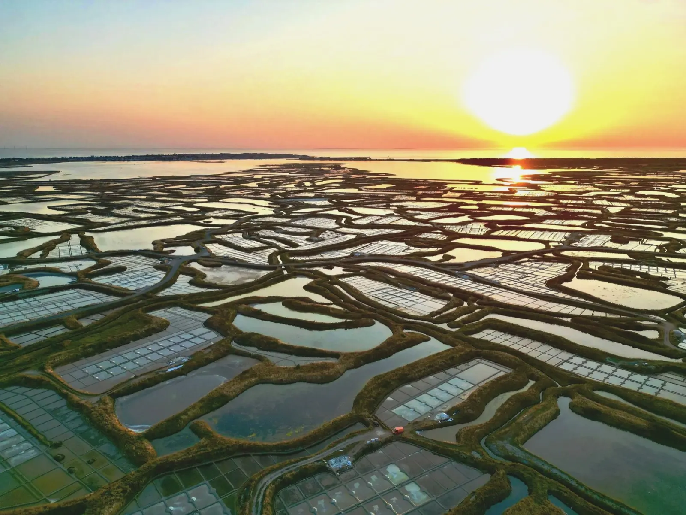
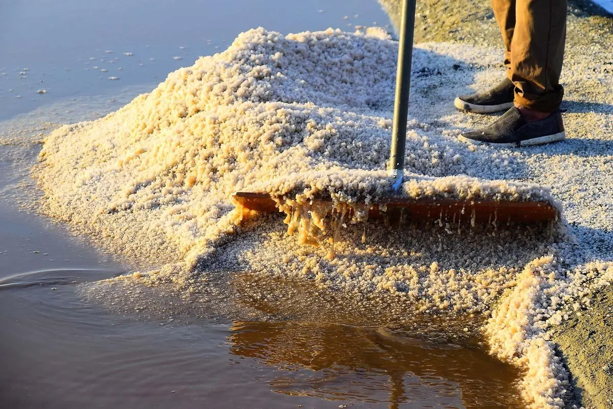
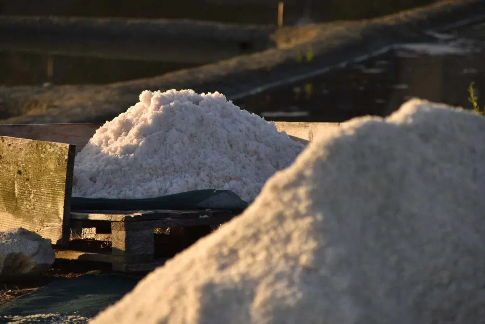
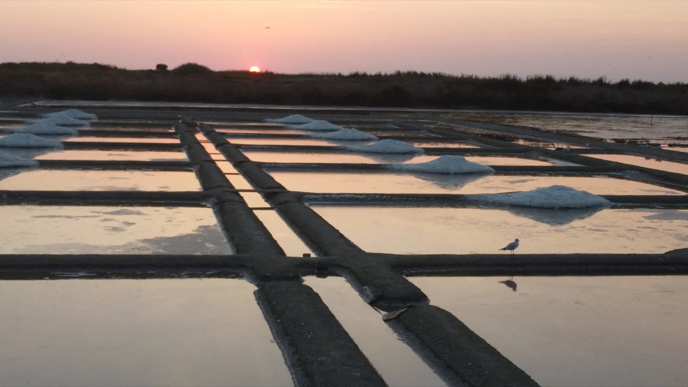
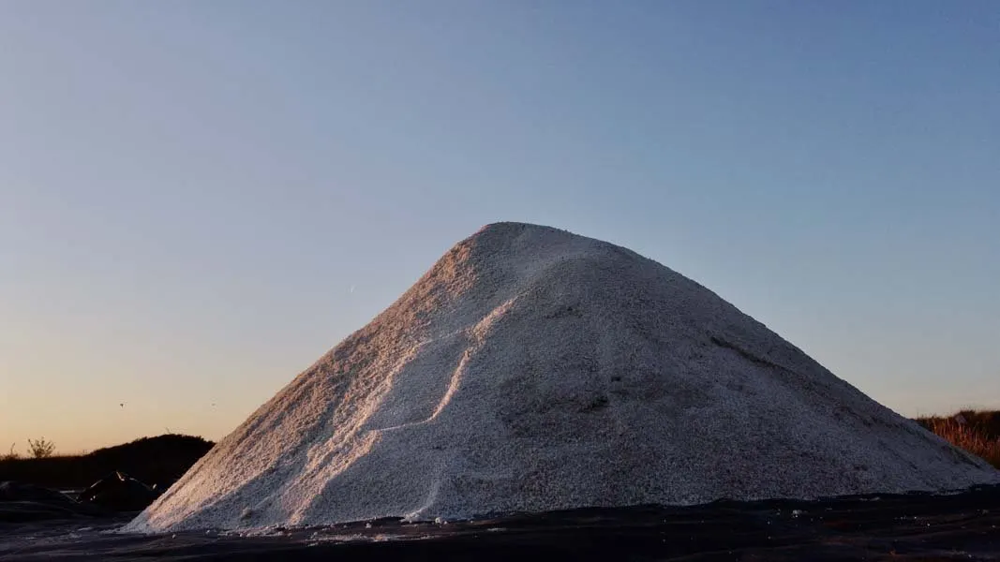
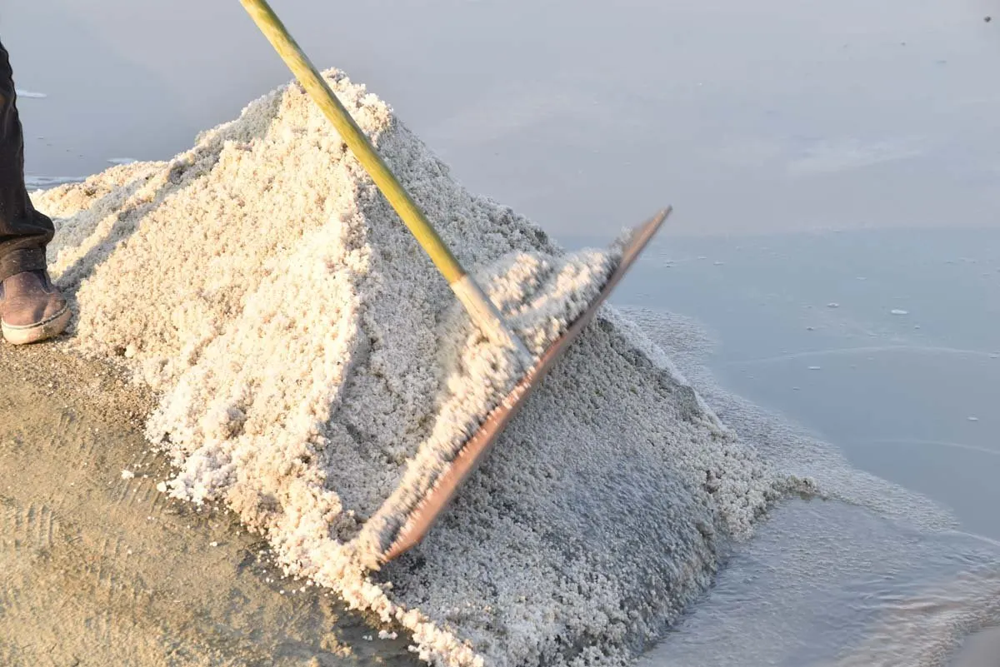
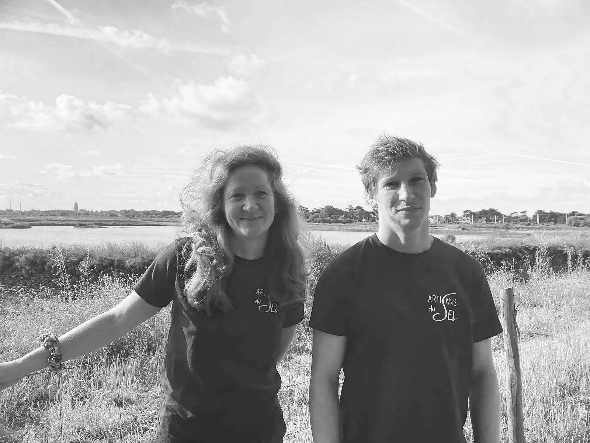

Sel de Guérande IGP et fleur de sel artisanale.
Récoltés à la main par les paludiers dans les marais salants de Guérande, transformés au Croisic. Pas de broyage, pas de chauffage : nous préservons les cristaux naturels récoltés dans les salines.
- IGPet Nature et Progrès
- Depuis 1999une transformation douce du sel
- Repris en 2018par Mérédith et Gautier
- Une quarantainede personnes aujourd'hui
- Le Croisicnotre atelier boutique
Nos sels, 100 % naturels, sans additif, sans raffinage.
Pour un assaisonnement, de la cuisine à la touche finale. Le nôtre n'est jamais lavé, ni raffiné, ni chauffé : il garde sa structure cristalline naturelle, ses oligo-éléments et ses nuances de goût.
La fleur de sel de Guérande IGP
Le gros sel de Guérande
3 à 7 mmLe sel fin de Guérande
moins de 3 mmLes sels aromatisés biologiques
Notre signature : des sels aromatisés biologiques de haute qualité.
Nos sels contiennent
- des oligo-éléments naturels ;
- moins de sodium pur que le sel industriel ;
- aucun additif : antiagglomérants, glutamate, fluor, iode, etc.


Les marais salants de Guérande, le berceau du sel.
Nos sels proviennent exclusivement des marais salants de Guérande, un ouvrage écologique et productif entièrement façonné par l'homme et dédié au sel depuis 2000 ans.


Ils sont répertoriés
- Zone naturelle d'intérêt écologique, floristique et faunistique depuis 1991
- Zone humide d'importance majeure en France depuis 1994
- Convention de Ramsar, zone humide d'importance internationale, depuis 1979
- Natura 2000
- L'un des 100 Sites remarquables du goût en France
- Au patrimoine immatériel de France
Paludier, l'alchimiste des marais
Véritable façonneur d'argile, le paludier œuvre toute l'année dans ses marais : 8 mois de l'année, il les entretient pour la possibilité d'une récolte en période estivale. C'est un métier hors norme, au plus proche des éléments.
Le sel n'est jamais garanti ; il est espéré, accompagné, accueilli.
Le métier de Paludier, à la lumière des écrits et travaux de Gildas Buron


Notre histoire
Les Artisans du Sel est né en 1999, animé par une vision simple mais exigeante : une transformation douce du sel de Guérande labellisée Nature et Progrès, gage d'un sel resté fidèle à ses cristaux d'origine.
Frère et sœur, nous avons repris l'entreprise en 2018, proche de la disparition, et l'avons reconstruite en conservant son âme.
Aujourd'hui, elle réunit une quarantaine de personnes.
Notre atelier boutique, au Croisic.
Tous nos produits sont en vente dans notre boutique à l'atelier, du lundi au vendredi.
Professionnels
Épicerie, grossiste, export, cadeaux et coffrets, événements et mariage : l'espace professionnels. Dans votre message, précisez vos coordonnées, votre activité, les produits souhaités, la quantité et l'adresse de livraison.
- Adresse
- 3 rue du Simalion
44490 Le Croisic - Téléphone
- 02 40 11 11 44
- contact@artisansdusel.fr
- Boutique en ligne
- artisansdusel.fr